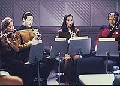
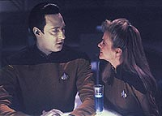
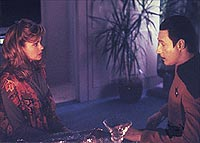
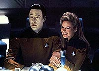

|
MANCHETE
DO EPISDIO
Data
procura o amor e d novo passo
na busca por sua prpria humanidade
Episdio
anterior | Prximo
episdio
Sinopse:
Data Estelar: 44932.3.
A alferes Jenna D'Sora, se recuperando de um rompimento com seu
namorado, subitamente comea a ver em Data algo mais que uma
amizade. Aps a jovem beij-lo apaixonadamente nos lbios, o andride
resolve pedir conselhos a seus amigos sobre o que fazer e decide
investir no novo relacionamento.
 J
que ele no tem quaisquer emoes ou sentimentos, Data cria um
programa especial para gui-lo nas iniciativas amorosas.
Entretanto, conforme seu relacionamento com Jenna progride, ele
descobre que, em romances, o curso lgico nem sempre o mais
apropriado. Com isso em mente, ele decide iniciar uma discusso com
Jenna, depois explicando que tomou a deciso porque seu estudo de
dinmica interpessoal sugere que conflitos muitas vezes fortalecem
a ligao entre duas pessoas. Quando Jenna aponta que h algo
artificial no comportamento dele, ele concorda, lembrando-a de que
todos os seus comportamentos so baseados em um programa e,
portanto, so artificiais. J
que ele no tem quaisquer emoes ou sentimentos, Data cria um
programa especial para gui-lo nas iniciativas amorosas.
Entretanto, conforme seu relacionamento com Jenna progride, ele
descobre que, em romances, o curso lgico nem sempre o mais
apropriado. Com isso em mente, ele decide iniciar uma discusso com
Jenna, depois explicando que tomou a deciso porque seu estudo de
dinmica interpessoal sugere que conflitos muitas vezes fortalecem
a ligao entre duas pessoas. Quando Jenna aponta que h algo
artificial no comportamento dele, ele concorda, lembrando-a de que
todos os seus comportamentos so baseados em um programa e,
portanto, so artificiais.
Enquanto isso, a Enterprise explora uma nebulosa cujas propriedades
nunca foram encontradas antes. Para investigar os efeitos que essas
propriedades teriam sobre formas de vida, Picard decide visitar um
planeta prximo. Durante a viagem, objetos comeam a cair no cho
misteriosamente, mas ningum associa as estranhas ocorrncias com
a nebulosa.
Quando a nave chega nas coordenadas do planeta, a tripulao
descobre apenas espao vazio, sugerindo que o astro teria
desaparecido. Momentos depois, o planeta aparece diante dos olhos
dos tripulantes. Uma pesquisa conduzida por Data sugere que a
nebulosa pode estar causando pequenos vos no tecido do espao prximo,
que causam a deformao de qualquer matria que entra em contato
com eles.
 Partes
da nave comeam a desaparecer, e Picard percebe que todos esto em
grande perigo, ordenando a imediata sada da nebulosa. Entretanto,
a Enterprise muito grande para manobrar evitando os vos, e o
capito obrigado a assumir a perigosa misso de pilotar uma
nave auxiliar pela nebulosa frente da Enterprise, guiando-a em
segurana.
Aps a sada da nebulosa, Jenna chega aos aposentos de Data e diz
a ele que no poder mais continuar o relacionamento. Ele
reconhece que seu namorado anterior era pouco emotivo e acha que sua
atrao por Data indicava um padro. Data compreende a validade
de sua opinio e concorda em interromper seu programa para namoro
sem hesitar.
Comentrios:
"In
Theory" mais um belo estudo sobre um dos personagens
mais fascinantes de Jornada nas Estrelas --sim, estamos
falando de Data. Desta vez, somos convidados a explorar o amor sob o
ponto de vista do andride, e o resultado dessa viagem pode ser
definido, no mnimo, como muito divertido.

bem verdade que em alguns momentos a caracterizao de Data est
aqum das capacidades j demonstradas pelo andride. Todo mundo
sabe que ele capaz de movimento mais graciosos do que os
aplicados quando ele convida Jenna a sentar-se ao seu lado para
receb-la em seus braos e dar-lhe um beijo.
Por outro lado, os acertos de Brent Spiner superam com folga seus
pequenos exageros. As cenas em que um sedutor Data faz de tudo para
deixar sua companheira confortvel, ou a sbita briga entre os
dois so momentos impagveis.
Mais uma vez o andride funciona como um belo espelho para nossa prpria
humanidade. V-lo "emular" uma paixo quase to
agradvel quanto estar apaixonado voc mesmo, pela extrema
sinceridade de suas intenes. E ver Jenna terminando com ele
quase to triste, pelas mesmas razes. O que nos leva paradoxal
imagem de nos identificarmos com um personagem que, a rigor, deveria
ser o mais diferente de ns. So justamente as diferenas que
mostram o quanto a essncia a mesma, apesar das diferentes
roupagens.
 Os
personagens principais so bem utilizados na trama de Data,
oferecendo suas perspectivas nicas a respeito da situao do
amigo andride. Pessoalmente decepcionante foi a resposta de Picard,
que mais lembrou o ranzinza das duas primeiras temporadas do que o
capito que nos acostumamos a ver nos anos subseqentes.
Sobre a trama secundria, vale dizer que at mostrou alguma
qualidade, levando em conta o fato de que sua existncia se deu
para meramente produzir a "falsa encrenca" do episdio,
propiciando um senso de comeo, meio e fim para a histria. Vemos
mais uma vez Picard tomando para si a responsabilidade de guiar sua
nave em situao de crise, como ele j havia feito em "Booby
Trap", da temporada anterior.
Em termos de direo, Patrick Stewart no teve muito a trazer
para o episdio. Evitando muitas inovaes, o ator conduziu bem o
episdio por trs das cmeras, mas sem qualquer destaque digno de
nota.
 O
episdio traz de volta o tema recorrente da busca da humanidade por
Data, em suas vrias facetas. Ele segue o padro estabelecido em "Data's
Day" --colocando o personagem em primeiro plano e
deixando o enredo envolvendo a nave como pano de fundo. O resultado
no to primoroso desta vez, mas funciona perfeitamente como um
prosseguimento natural do eterno esforo do andride por suplantar
sua prpria programao.
Citaes:
Worf - "Klingons
do not pursue relationships. They conquer that which they desire.
However, Lt. D'Sora serves under my command. If she were mistreated,
I would be very displeased ...Sir."
("Klingons no procuram relacionamentos. Eles conquistam o que
querem. Entretanto, a tenente D'Sora serve sob meu comando. Se ela
for destratada, eu ficaria muito insatisfeito ...senhor."
Data - "Captain. I am seeking advice on how to..."
("Capito, estou procurando conselho em como...")
Picard - "Yes, I've heard, Data. And I would be delighted to
offer any advice I can on understanding women. When I have some, I'll
let you know."
("Sim, eu sei, Data. E eu ficaria encantado em oferecer
qualquer conselho que eu puder sobre como entender as mulheres.
Quando eu tiver algum, eu aviso.")
Jenna - "You didn't talk to the entire ship about us?"
("Voc no falou sobre ns para a nave inteira?")
Data - "No. In actuality less than 1% of the Enterprise crew
was involved."
("No. Na verdade menos de 1% da tripulao da Enterprise
foi envolvida.")
Trivia:
 Aps Jonathan Frakes, a vez
de Patrick Stewart (Picard) mudar de lado e dirigir um episdio da Nova
Gerao. Stewart voltaria a dirigir um episdio da srie na
quinta temporada, em "Hero
Worship", mais um episdio centrado em Data.
Aps Jonathan Frakes, a vez
de Patrick Stewart (Picard) mudar de lado e dirigir um episdio da Nova
Gerao. Stewart voltaria a dirigir um episdio da srie na
quinta temporada, em "Hero
Worship", mais um episdio centrado em Data.
O
gato de Data mostrado em "Data's Day"
recebe um nome: Spot. Porm mais tarde revelado que ele na
verdade uma gata, que tem filhotes no episdio da stima
temporada "Genesis".
Michele
Scarabelli, que interpreta o interesse romntico de Data Jenna D'Sora,
conhecida como Susan na srie de TV "Alien Nation".
E
o "alumnio transparente", "criado" por Scotty
no sculo 20 ("Jornada nas Estrelas IV"),
citado neste episdio.
Whoopi
Goldberg retorna como Guinan aps sua ltima apario, em "Night
Terrors". Ela apareceu oito vezes nesta temporada, um
recorde.
Rosalind
Chao tambm retorna como a esposa de Miles O'Brien, Keiko, aps
sua ltima apario em "Night
Terrors". Nesta sua temporada de estria, Chao
apareceu em quatro episdios. Agora ela retornar em "Disaster",
do quinto ano, onde d a luz ao primeiro filho do casal O'Brien.
Ficha
tcnica:
Escrito por Joe Menosky & Ronald
D. Moore
Direo de Patrick Stewart
Exibido em 03/06/1991
Produo: 099
Elenco:
Patrick Stewart como
Jean-Luc Picard
Jonathan Frakes como William Thomas Riker
Brent Spiner como Data
LeVar Burton como Geordi La Forge
Michael Dorn como Worf
Gates McFadden como Beverly Crusher
Marina Sirtis como Deanna Troi
Elenco convidado:
Michele Scarabelli
como a alferes Jenna D'Sora
Rosalind Chao como Keiko O'Brien
Colm Meaney como Miles Edward O'Brien
Pamela Winslow como alferes McKnight
Whoopi Goldberg como Guinan
Episdio
anterior | Prximo
episdio
|